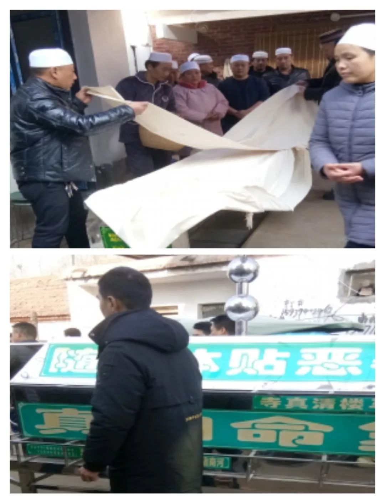
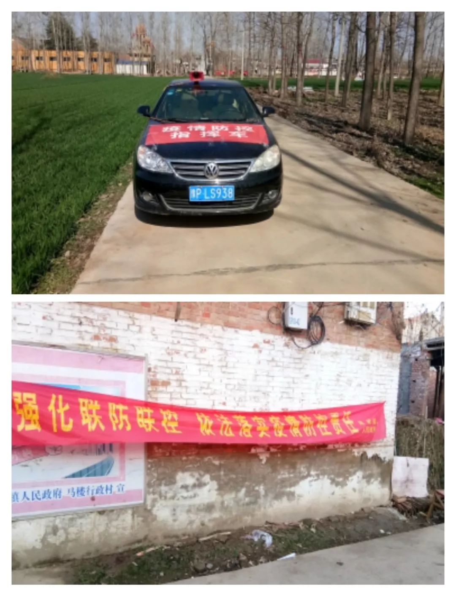
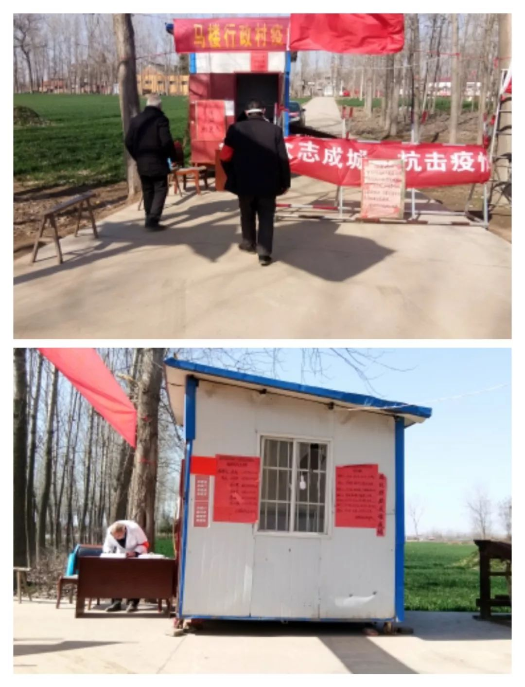

疫情之下的异乡春节与他者的世界
原文链接 备份链接 2020年1月13日，疫情还远在长江边的武汉，身在北京的我简单地收拾了两件衣服，坐上开往河北省邯郸市的高铁，我的寒假田野调查就正式开始了。出发之前我向导师熊春文老师表达了自己想要去“曲周田野点”与村里的乡亲们过春节，并 …
2020年1月14日，腊月二十，在纳家营做田野调查的我，收到儿时玩伴的微信消息，他问我春节回不回家，如果回去的话，就告诉他一下，他也从广州赶回去，这样一来，假期里就会有人做伴，不会那么无聊。于是我们就约好这个假期都要回家过春节。
结束了田野行程，我直接从学校回到家里。一般来说，腊月二十号以后，是在外务工人员返乡的高潮，当然，我们村也不例外，许多外出打拼的人都陆续回到村中，冷清了一年的村庄，慢慢地又恢复了活力，昔日村头路口的“棋牌摊”、“侃括儿群”（河南方言，指几个人围在一起聊天）又招来了许多“顾客”。
1月18日，腊月二十四，记得这天早上，我刚醒来，听到我妈对我爸说：“你今天上午去东边，给那老头上香份子（香礼，村里某位人去世，全村人都要送香礼）去。”听了这话我问了一下是谁去世了。我妈说：“东边的五老头（外号）”。五老头是我们村中一致认为的好人，以前他天天在村里帮忙垫路，后来道路硬化了，他就整天坐在村口，给来往的车辆充气。他的葬礼请了十坊阿訇前来诵经。放假前一位学姐托我帮她收集一些有关少数民族葬礼的材料，这刚好是个好机会。于是我就和爸爸一起去了五老头家中。并且记录了一些内容。

1月19日，腊月二十五，原本这天我计划去五老头家中找其家人做访谈，想详细了解一下整个葬礼的细节及全过程。后来想想，他的家人刚经历过失去亲人的悲痛，这个时候去不太好，于是决定等几天再去。
这时，一场突如其来的疫情打断了我的计划。
1月22日，腊月二十八，在我们家庭微信群聊里发出一条有关武汉封城的消息。起初，我并未太在意。后来，听到家门口一些乡亲也都在聊武汉封城、病毒传染等话题，我才感觉此事比较严重。我回到家里搜了一下新闻，才知道武汉已经全部戒严，各大药店的口罩、消毒药品等等都已断货。当时我脑海里的想法就是病毒那么严重，今年的春节计划估计要泡汤了。
1月23日，腊月二十九，这天一早便看到朋友圈中的消息，已有几百例病人确诊患有新冠肺炎。此病毒不仅存在人传人，并且传播速度非常快。这下我感觉事情并没有想象中的那么简单，于是就告诉家人要做好防护和消毒工作。
1月24日，腊月三十，绝大部分村民的防护意识还远远不够。大家只知道围在一起，讲自己在网上看到的消息，哪里又封城了、哪里又增加了多少确诊病例，甚至还有人说病毒来不到我们这里，所以根本不必担心。可是我大伯（村医）却说：“这病不是简单的病毒传染，看这情况与十几年前的非典有些类似，甚至比非典还要严重”。他说，做好防护总是没错的。
1月25日，正月初一，今天是春节，一大早人们便三五成群，要去探望长辈。就在大家要相互走动时，村委会收到“河南省启动新型冠状病毒肺炎疫情防控一级应急响应”的通知，并收到封村的命令。收到命令后，村领导班子立即召开会议，安排实施方案。领导人员分组包干统计所在组外出回归人员，尤其是从湖北、武汉的归来人员的活动轨迹。村里的党员则去封闭路口，所有可以进村的小路全部被封死，只留村主干道出入，并且安排人员值班把守，把一切不安全的因素阻止在村外，就这样一间简易活动房、一张桌子、一把椅子就组成了村子防疫指挥部。

1月26日，正月初二，按照传统习俗，今天是回娘家的日子，但是由于村子被封，所有的走亲访友活动也都随之取消。这天村支部紧急召开支部大会，会议要求全体党员要发挥模范先锋作用，必须全部到村防疫一线去，就这样，我参加了“护村行动”。
为了准确地了解村里的外出归乡人员的情况，村里决定再次进行统计，这次是入户挨个排查。由于我是村里最年轻的党员，所以我主动参与了入户调查这项活动。入户调查进行了两天，在这两天中，我们除了排查外乡归来人员，主要目的还有向村民宣传防疫知识，劝告人们尽量不要出门。宣传过程中，不免遭受到一些村民的反对，但是面对如此严峻的形势，为了保障村民的安全，我们也只能尽最大努力去和他们沟通。
1月27日，正月初三,虽然已经封村三天，但村民们的防护意识还是远远不够强，比如有些人还是外出，还有一些村民不戴口罩。在村口的卡点，我们备了一些口罩，给经过的人分发下去，并向其传达疫情期间不能出门的指示。
 （作者本人）
（作者本人）
从这天起，村里便建立起一套防疫的规则，村口由党员干部轮流把守，限制每天出入的人员数量，出入前后都要登记、测量体温、消毒等等。也是从这天开始，村里的广播每天全天播放防疫期间的规定。正是广播的作用，村民们了解到这场灾难的严重性，大概是从1月28日开始，外出人员就减少了许多。经过村里的入户排查，我们发现村中有三位从湖北归乡人员。对于这三位人员，我们实行让其居家隔离，安排了专门的医生负责记录其体温情况。不仅如此，村里还通过电话、微信等方式对其进行安慰和心理疏导，与他们一起度过隔离期，直至确认其平安无事。

1月31日，正月初七，人心惶惶的疫情下，手机微信、抖音成为人们的情感交流工具与娱乐平台。由于今天天气比较好，已经在家待了七天的年轻人早已耐不住了寂寞，许多人都迈出家门，在乡间小道漫步。但此时的疫情依然很严峻，这无疑又给我们值班人员带来一系列的工作量，驻村干部当即决定要我们下到村里去“赶人”。于是，村里又多了一个巡逻队，党员们除了在村口把守外，每天还要在村中巡逻，就这样日复一日度过了第一个14天。
2月9日，正月十六，今天是第二个14天的开始。接上级命令，要加强防护。从这天开始，村子里划分区域，每位干部包干一块区域负责对区域内的村民进行疫情知识宣传。村口的卡点也增加了夜班值班表，要求全天24小时值守，同时全面禁止村中人员外出，住在城区的人，也禁止回村。各行各业、娱乐场所、宗教场所除超市、药店以外全部关闭，一切物资需要由村委统一购买。直至今日，我们村的防护工作依然在十分紧张的进行着。

我们村的防护只是这次抗疫大战场中的一个小小的缩影，这样的战场遍布全国各地。就像村里广播说的：“这是一场你死我活的战争，不是你杀死病毒就是病毒杀死你。打赢了，以后年年过春节，打输了，今年就是你过的最后一个春节。所以大家都要自觉待在家里，不要去给国家制造麻烦，既然上不了防疫一线，那就做一个遵纪守法的后援力量”。
这次寒假我虽然没有完成收集素材的计划，虽然没有和两年未见的发小外出游玩，但我在践行着自己的入党誓言。
面对疫情，我们虽然寸步难行，但是无论在哪儿，都请各位做好防护。我们万众一心，一定能打赢这场疫情阻击战！
原文链接 备份链接 2020年1月13日，疫情还远在长江边的武汉，身在北京的我简单地收拾了两件衣服，坐上开往河北省邯郸市的高铁，我的寒假田野调查就正式开始了。出发之前我向导师熊春文老师表达了自己想要去“曲周田野点”与村里的乡亲们过春节，并 …
原文链接 备份链接 *************▲*************玉龙雪山脚下的玉湖村。 （受访者供图/图） 全文共*4244*字，阅读大约需要10分钟。 在求助信里，我写了四样求支援的物品，是因为我只知道这四样。而实际情况 …
原文链接 备份链接 *************▲************* 1月27日，旅客在关闭的青岛汽车总站外徘徊。 （新华社记者 李紫恒/图） 全文共*1705*字，阅读大约需要*4*分钟。 我们村“封”在村里的年轻人每天猫在家 …
原文链接 备份链接 《战疫口述记》，是燃财经在新型冠状病毒肺炎期间推出的特别栏目，记录疫情亲历者的观察和感受。本文为第2期，第1期请见《我在武汉战肺炎》。 作者 | 闫丽娇 唐亚华 孟亚娜 金玙璠 黎明 孔明明 苏琦 编辑 | 周昶帆 春 …
原文链接 备份链接 封面报道之治理篇： 孝感：如何夯实乡村防火墙？ | 鄂州：考验疫区网格员 | 咸宁：接送病人在路上 | 襄阳：最后的出口 湖北省疫情分布图以颜色深浅表示感染程度。目前，武汉之外16地市仅有潜江和神农架两块是浅粉色。 数 …